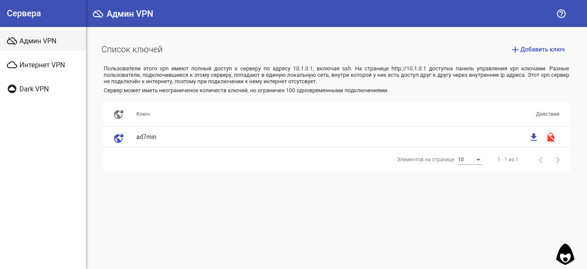

Использование¶
VPN сервера¶
VPN соединение - шифрованное соединение напрямую между клиентом и сервером. Такие сетевые туннели позволяют связать пользователей из разных геолокаций планеты и интернет операторов в общую защинённую от доступа «из-вне» сеть.
По умолчанию, VPNFace Lite создаёт три OpenVPN сервера для различных задач:
Админ VPN¶
VPN предназначен для обеспечения безопасности серверного администрирования, поэтому он не подключён к общей интернет сети, и при подключении с установками клиента по умолчанию - у клиента отсутсвует доступ в интернет.
В этой vpn подсети (10.1.0.0/24) сервер полностью доступен по адресу 10.1.0.1
ssh 10.1.0.1 для ssh соединения, http://10.1.0.1 - для доступа в панель управления ключами, http://10.1.0.1:81 - докментация.
Интернет VPN¶
VPN предназначен для доступа в общий интернет через сервер. Это позволяет держать зашифрованными все данные между клиентом и сервером, и подменяет «интернет публичные» данные клиента данными сервера, так как расшифрованый интернет трафик в публичный интернет выходит уже с сервера.
DNS запросы пользователя отправляются на публичные Google DNS 8.8.8.8 и 8.8.4.4
Dark (TOR) VPN¶
Dark VPN (англ. тёмный, чёрный), использует TOR даркнет для доступа в интернет. Пользовательский трафик проходит шифровано до сервера через vpn туннель, откуда перенаправляется в TOR сеть. Перенаправляются так же и DNS запросы, поэтому любые *.onion сайты работают автоматически, прозрачно для пользователя.
Настройка TOR по умолчанию описана в Конфигурация TOR, ряд стран по умолчанию поставлен в блокированные в качестве выходных узлов.
Панель управления ключами¶
Панель упрощена до минимума, и позволяет создавать, блокировать и разблокировать клиентские ключи, а так же скачивать готовую конфигурацию в виде ovpn файла.
Панель написана на AngularJS 6, представляет из себя веб приложение для использования vpnface_lite api endpoints и идёт по умолчанию в комплекте с серверными файлами в скомпилированном виде.
Исходные коды так же доступны в отдельном репозитории https://github.com/abrakadobr/vpnface_lite_ng.git
JSON API¶
VPNFace Lite предоставляет набор json api endpoints котрые могут быть использованы отдельно, без панели управления через http запросы.
Endpoints, использующиеся при установке:
| GET | /api/logs | получить последние логи |
| GET | /api/status | текущий статус. |
| GET | /api/finilize | запустить завершение установки |
| POST | /api/confirmip | установить ip и стартовать установку POST:ip |
| JSONP | /api/ping | во время установки подтверждает подключение vpn |
Endpoints, использующиеся при работе:
| GET | /api/logs | получить последние логи |
| GET | /api/status | текущий статус. |
| GET | /api/ovpn/:key | скачать ovpn ключ |
| POST | /api/gencli | создать новый ключ POST:srv, POST:cli key=cli@srv |
| GET | /api/lock/:key | заблокировать ключ |
| GET | /api/unlock/:key | разблокировать ключ |
| GET | /api/vpnlist | полный список серверов (файл servers.json) |
| GET | /api/server/:code | полная информация о отдельном сервере |
параметр :code - код сервера <S> (Директория данных)
параметр :key - составная строка вида client@server. к примеру для клиентского ключа admin с сервера adm параметр :key будет равен admin@adm